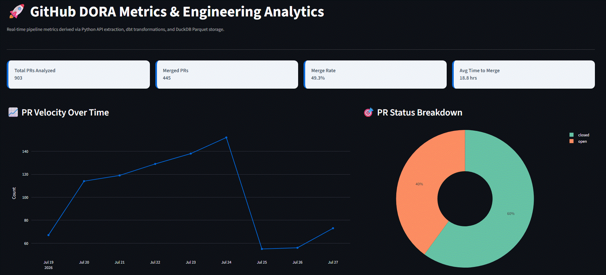

Dolphin Boiler Monitor
A FastAPI and uv-powered service to monitor Dolphin smart water heater controller, complete with automated CI/CD testing, strict code coverage, and configurable polling.
Fully documented (swagger) API endpoints
I build practical software that turns real-world problems into data pipelines, automation tools, APIs, and useful applications.
| 🐍 Python & Backend | Applications, APIs, automation tools, and CLI utilities |
| 📊 Data & Analytics | ETL pipelines, data processing, dashboards, and engineering metrics |
| ⚙️ Automation & Infrastructure | Docker, Linux, Raspberry Pi, APIs, monitoring, and self-hosted services |
| 🤖 AI & LLM Applications | Local AI tooling, model integration, and AI-powered applications |
A FastAPI and uv-powered service to monitor Dolphin smart water heater controller, complete with automated CI/CD testing, strict code coverage, and configurable polling.
Fully documented (swagger) API endpoints

An end-to-end data pipeline and interactive dashboard that transforms raw GitHub REST API metrics into DORA and engineering velocity insights using Python, dbt, DuckDB, and Streamlit.

A lightweight Go/TUI application for discovering, launching, and managing local AI models directly from the terminal.

A digital implementation of the Onitama board game with turn-based gameplay, an interactive terminal interface, and an AI opponent.
The AI can also play against itself for automated games.
Python · SQL · MSSQL · MySQL · DuckDB · dbt · ETL · SSRS · SSIS · Power BI · BI · Tableau
Go · Flask · REST APIs · Web Services · GUI / TUI
Docker · Linux · AWS · Terraform · Jenkins · CI/CD
LLMs · Local AI · PowerShell · Shell · Automation
Git · Testing · Agile · DevOps · System-level Thinking
I'm a Python-focused developer who enjoys turning real-world problems into practical software.
My projects span data engineering, automation, APIs, AI tooling, and self-hosted infrastructure. I particularly enjoy taking projects from an initial idea through implementation, deployment, and monitoring.